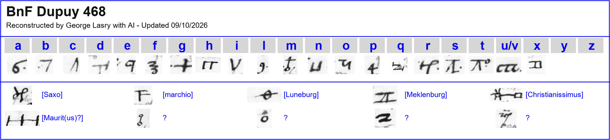
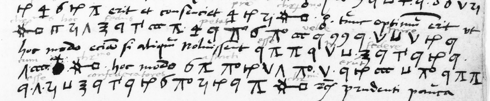

George Lasry’s decipherment
George Lasry’s report on this item, as he sent it on 24 October 2026 (PDF), in its own order and wording. The decipherment, the translation and the reconstruction of the key are his, made with ChatGPT Astra 6 and Anthropic Opus 5.5. This project’s own checks follow under Verification.
Dupuy 468
Contents: A German princely league would admit new members by majority consent, promise pensions, and later bring in the French king.
2/3 pages transcribed; 1 more in part; 2/2 cipher pages deciphered
- Ciphertext-only:
- No
- Sender:
- Ernestus dux and Joachimus; probably Ernst of Brunswick-Lüneburg and Joachim von Maltzan
- Recipient:
- Francis I, King of France
- Year:
- Eve of Saint Paul, at five in the morning; no year. Context suggests c.1518–1520;1519 remains plausible.
- Key:
- 30 symbols, 20 letter signs, 6 in nomenclature, 3 nulls?, 1 unidentified
- Ciphertext:
- 684 elements, 660 identified (96.5%)
- Interlinear plaintext:
- Interlinear decipherment accompanies most cipher runs on f28r–v,PDF65– 66/Gallica63–64.

Excerpt and Translation
f28r, final four cipher lines

Excerpt
Tunc optimum erit ut christianissimus hoc fedus petat velle inire; hoc modo etiam si aliquando noluissent esse in federe cu[m] christianissimo, hoc modo astricti erunt esse confederatores christianissimi.
Translation
Then it will be best for the Most Christian King to ask to join this alliance. In this way, even if some had not wished to ally themselves with him, they will be bound to become his allies.
Readable text
The full text, folio by folio, as in the report. Bold marks the passages deciphered from the cipher; the rest is the clear text of the letter. Question marks are the report’s: [?] or a bare ? for a sign or group left unread, a ? after a word for a doubtful reading.
Dupuy 468
f28r
Invictissime potentissime ac christianissime Rex ac domine domine observandissime. Post humilimam atque humilimam commendationem Mti vestre certiorem reddimus nos ambos salvos ac fortunatos venisse in opidum Cerbest et ibi erant simul Maurit(us)? Saxo marchio dux de Luneburg ambo duces de Meklenburg et multi alii [?] ego filius ducis de Luneburg tractatum cum patre meo ad partem et ego Iochin? ut proposui marchioni conmiss[i]onem meam In presentia ducis de Luneburg unius? de Meklenburg et consortii mei, quia marchioni sic placuit, conclusio hec est: marchio cum auxilio ducis de Luneburg [?] et prefati ducis de Meklenburg faciet totis viribus ut fedus concludatur quam? cito? fuerit possibile, est [?] ipsis? omnibus melius et utilius pro christianissimo videtur, ut primo de christianissimo nulla fiat mentio, sed inter eos et qui inter Germanie principes attrahi possunt fiat fedus [?] et unus articulu[s] inponetur ut nullus alius in istud fedus acceptaretur nisi maiore parte confederatorum consen[t]iente et quemcumque maior pars admitteret aut q[?]? consentiret ut minor pars admitteret et consentire teneretur. Deinde poterit paulatim tractari cum his qui non dum habent speciale fedus aut singulare amiciciam cum christianissimo ut speciale fedus fiat aut amicitia, ac tandem ubi securum sit quod longe maior pars erit et conservet? pro christianissimo tunc optimum erit ut christianissimus hoc fedus petat velle inire hoc modo etiam si aliquando noluissent esse in federe cu[m] christianissimo hoc modo astricti erunt esse confederatores christianissimi. Vestre prudentie [?]?
f28v
Nos omnino speramus quod fiet ut cito faciemus maiorem ligam et confederacionem in favorem christianissimi, quod fit in tota Germania . Sed oportet omnino ut marchio dux de Luneburg omnino consultum ut aliquis etiam nobis necesse et consultavidetur ut hiis qui non habent a christianissimo pensionem ipsis promittatur . Et videtur marchio consultum ut conso[r]te? nobis gallum christianissimus non mittat principem? pro posse? sed nobis [?] duobus autoritatem det p[ri]vatis? principibus promittendi donec quando fedus inter eos factum sit ac temporibus erit ut christianissimus ingrediatur. Deinde christianissimus poterit mittere ad placitum cuius? [?]
De ista materia [?] Nos minore suspicione faciemus [?] Majestas vestra intelliget haec ex litteris quas ego conscripsi ad dominum Cancellarium et de addenda? inclusa [?] majestati vestre [?] significavimus, restat nos majestati vestre humilime atque humiliter commendamus quam optimus maximus felicissime conservat?
Data in vigilia sancti Pauli in mane hora quinta.
f29r
Humillimi servitores,
Ernestus dux etc.
Joachimus etc.
01 Verification
Spot-check against the manuscript
This result is George Lasry’s. This project did not re-solve the cipher: it checked one sample against the Gallica image and recorded what it found.
- Batch B. Image checked: https://openapi.bnf.fr/iiif/image/v3/ark:/12148/btv1b10035959t/f63/full/1600,/0/default.jpg
- Folio matches the report: yes; cipher present: yes
- What we checked: f28r l.2 V.⊔.ч.4.V.T.cc.m -> i n o p i d u m = "in oppidum" (interlinear agrees); signs match his table (i=V,n=⊔,o=ч,p=4,d=T,u=cc,m)
- Verdict: confirmed (method key recovered based on adjacent plaintext, extent complete). The check is a sample, not a re-solution.
- Notes: Addressed Christianissime rex, signed Ernestus/Joachimus; interlinear on most runs; 96.5% identified, 2/2 cipher pages; 1 page only partly transcribed (clear text). Date c.1519 is his inference.

02 Other contributions
The plaintext of the period beside the cipher, as George Lasry reports it:
- Interlinear plaintext
- Interlinear decipherment accompanies most cipher runs on f28r–v,PDF65– 66/Gallica63–64.
Full texts
The transcription and the decryption of every document on this page, so that the reading can be used and checked. Short files are shown here; all are in the repository.
George Lasry's report entry (excerpts and translation) read in part
A German princely league would admit new members by majority consent, promise pensions, and later bring in the French king. Signed Ernestus dux and Joachimus (probably Ernst of Brunswick-Lüneburg and Joachim von Maltzan) to Francis I, King of France, on the eve of Saint Paul with no year (c. 1519 by Lasry's inference), as given in George Lasry's report.
Builds coherent sentences, but under the read bar of 95% of words read as sense (96% here); the holes are marked in the reading.
Decryption: in full above, in George Lasry’s decipherment (readable.md)
Reading: in full above, in George Lasry’s decipherment (readable.md)
Translation: in full above, in George Lasry’s decipherment (translation_excerpt.md)
03 Sources
- George Lasry, with ChatGPT Astra 6 and Anthropic Opus 5.5, BnF cipher research, 10 October 2026 (sent to Daniel Bourdeau on 13 October 2026 for publication here), p. 77; his other items are listed on his contributor card.
- image checked in the spot-check
- The working folder:
targets/dupuy468/(his entry as extracted from the report, our spot-check,profile.json).